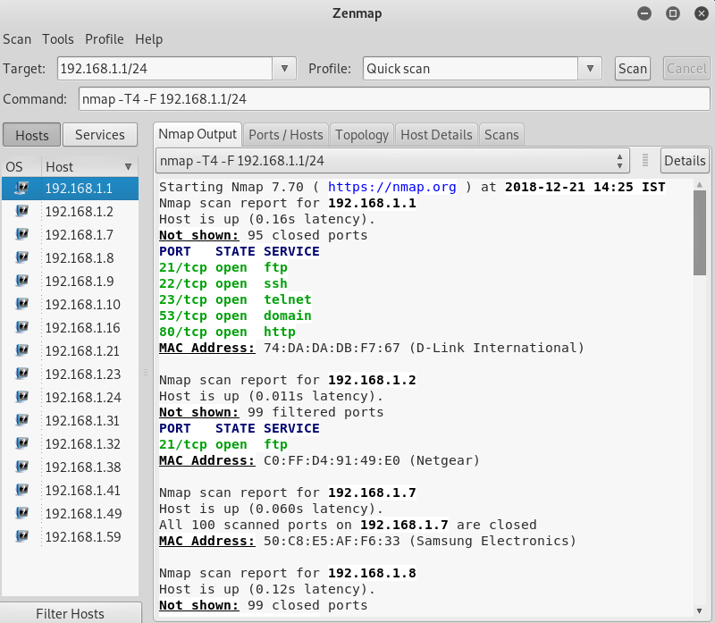
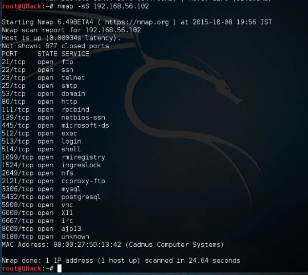

Analyse complète des ports et services pour les tests de sécurité
Nmap (Network Mapper) est un scanner réseau open-source permettant de détecter les hôtes actifs, les ports ouverts, les services en cours d'exécution, les systèmes d'exploitation, etc.
Zenmap est l'interface graphique de Nmap, idéale pour les débutants ou ceux qui préfèrent une visualisation plus intuitive.
Cette commande installe le scanner en ligne de commande nmap sur Debian/Kali Linux. Zenmap, cependant, nécessite une installation manuelle sur les versions récentes.
Scan rapide sur l'adresse IP pour détecter les ports ouverts par défaut.
Scan tous les hôtes d'un sous-réseau pour voir qui est actif et détecter les ports ouverts.
Détails :
-sS : Scan SYN furtif (souvent non détecté par les firewalls)-sV : Détection de version des services (ex: Apache 2.4.18)-O : Tente d’identifier le système d’exploitation (OS fingerprinting)-A : Active toutes les options ci-dessus + script NSE + traceroute-p spécifie le port à analyser (ici SSH sur le port 22).
Scan uniquement les ports spécifiés (FTP, SSH, HTTP, HTTPS).
-oN permet de sauvegarder les résultats dans un fichier texte classique.
Interface Zenmap et Nmap montrant un scan réseau :
 -A permet une analyse complète (très utile lors d’un pentest).